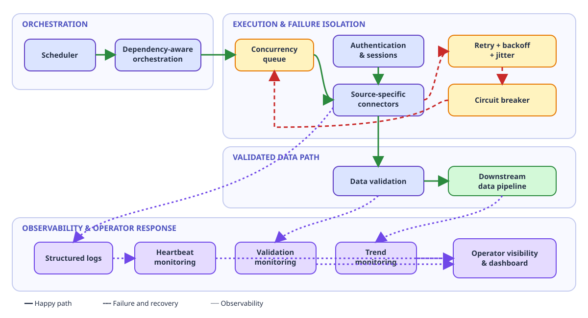

The first ten retailers were easy. You build a connector, test it against their portal, confirm the data lands cleanly in your pipeline, and move on to the next. The logic is straightforward, the edge cases are few, and you feel productive. The next 190 taught me everything I know about automation engineering.
I spent the better part of two years building and maintaining a large-scale RPA system for a Nordic SaaS company. The job was to pull sell-out data from retail portals across Scandinavia and Northern Europe—each with its own login flow, its own data export format, its own particular way of breaking at the worst possible time. What started as a modest proof-of-concept eventually grew into a system handling over 200 data sources, running daily, with real money riding on its reliability.
This is not a Power Automate tutorial. This is what I wish someone had told me before I started.
What Works at 10 Breaks at 50
When you have ten automated flows, you can keep them in your head. You know which retailer changed their portal layout last Tuesday. You remember that one connector needs a 3-second delay after login because their server is slow. You can babysit them.
At 50, that stops working. The problems are no longer about individual connectors—they are about the system as a whole.
Scheduling collisions were the first surprise. Cloud automation platforms impose concurrency limits. When you have dozens of flows all scheduled for "6:00 AM, before the business day starts," you hit those limits hard. Flows queue up, timeout windows shrink, and suddenly a connector that needs 4 minutes to run is getting killed at 3 because something else is hogging the slot. We ended up building a staggered scheduling system with dependency-aware ordering—not because we wanted to, but because the alternative was daily failures.
Connector limits were the second. Every integration platform has a ceiling for how many API calls, how many concurrent sessions, or how many premium connectors you can run. These limits are buried in documentation that nobody reads until they hit them in production. At scale, you are not building automations—you are negotiating with platform constraints.
Error cascading was the one that really hurt. A single failed authentication upstream can cascade through dependent flows. If your token refresh fails at 5:45 AM, every flow scheduled between 6:00 and 8:00 that depends on that token will fail. And they will fail in ways that look like different problems—timeouts here, empty responses there, malformed data somewhere else. Debugging a cascade at 9 AM, when stakeholders are asking where the morning report is, teaches you to build isolation between flows faster than any best-practice document ever could.
Interactive explanation · 24 seconds
Why every flow at 06:00 stops scaling
Watch flows stream from sources through the 06:00 gate into twenty execution slots, overflow into the queue, cascade into failures—and recover once starts are staggered. Play the animation, scrub the timeline, or jump between the eight chapters.
- Ten flows fit within the available execution capacity.
- At fifty and then more than two hundred sources, the 06:00 queue consumes timeout budgets.
- Synchronized retries amplify failures.
- Staggering, backoff with jitter, and circuit breakers bound the work.
Loading validated motion definition…
The Monitoring Problem
Here is something nobody tells you about large-scale RPA: the automation itself is the easy part. Knowing whether it worked is the hard part.
With 200+ flows running daily, you cannot rely on email alerts. At that volume, alerts become noise. You get 30 failure notifications, 15 of which are transient network issues that resolved on retry, 10 are known issues you are already tracking, and 5 are genuinely new problems. But you do not know which 5 until you have triaged all 30. That is not monitoring. That is a second full-time job.
We built a layered observability approach out of necessity. The first layer was heartbeat monitoring—did the flow run at all? Not "did it succeed," just "did it start and finish." A flow that silently fails to trigger is harder to catch than one that runs and throws an error. The second layer was data validation—did the output make sense? Row counts, date ranges, basic schema checks. A flow can "succeed" while pulling yesterday's data or an empty file. The third layer was trend detection—is the data volume for retailer X declining week over week? That usually means the portal changed something and our connector is silently pulling partial data.
The dashboard we eventually built was not sophisticated technology. It was a simple status page backed by a structured log. Green, yellow, red. But it took us far too long to build it, because when you are in the trenches adding new connectors, building the thing that tells you whether the other things are working feels like a distraction. It is not. It is the most important thing you will build.
Editable architecture diagram
The operating system around 200+ automations
The architecture separates scheduling, bounded execution, failure isolation, validation, and operator visibility. Solid green lines show successful data flow, dashed red lines show failure recovery, and purple dotted lines show observability.

Structured diagram description
The scheduler passes planned runs to dependency-aware orchestration and then a concurrency queue. Authentication supplies sessions to source connectors. Successful results pass through data validation into the downstream pipeline. Retry with backoff and jitter leads to a circuit breaker when failures persist, then returns isolated recovery work to the queue. Structured execution logs, validation results, and stored volume histories feed heartbeat, validation, and trend monitors, all visible in the operator dashboard.
Loading validated diagram definition…
Error Handling Is the Actual Product
At some point, I did a rough analysis of the codebase. The ratio of error-handling code to business logic was approximately 3:1. For every line that said "log in, navigate to the export page, download the CSV," there were three lines handling what happens when the login button is not where it should be, when the session expires mid-download, when the CSV comes back with different column headers than last week, when the server returns a 200 OK with an HTML error page inside it.
This ratio initially felt wrong. It felt like I was spending too much time on edge cases and not enough on features. I eventually understood that the error handling is the feature. Anyone can write a script that downloads a file from a website when everything goes right. The value is in the script that downloads the file when things go partially wrong, logs exactly what happened, retries intelligently, and fails gracefully with enough context for a human to fix it quickly.
Retry logic deserves its own paragraph. Naive retry—"try again 3 times with a 5-second delay"—causes more problems than it solves at scale. If a retail portal is having a bad morning, 200 flows all retrying simultaneously turn a temporary problem into a denial-of-service attack that you are inflicting on your own data source. We moved to exponential backoff with jitter, categorized errors into retryable and non-retryable, and built circuit breakers that would pause all flows for a given retailer if the failure rate crossed a threshold. These patterns are well-documented in distributed systems literature. They are not commonly discussed in the RPA world, but they should be.
The mark of a mature automation system is not how many tasks it can do. It is how well it behaves when things go wrong.
When to Stop Automating
This is the section that would have saved me the most time if someone had written it for me two years ago.
Not everything should be automated. That sounds obvious, but when you are deep in an RPA project, there is a gravitational pull toward automating the next thing and the next thing. The first 80% of data sources follow patterns—standard web portals, common export formats, predictable authentication. The remaining 20% are each a unique problem. One retailer sends data via email attachments. Another requires a VPN connection. A third has a portal that only works in a specific version of a specific browser. A fourth changes their export format every few weeks with no documentation or notice.
The temptation is to build increasingly complex automation to handle these outliers. The discipline is knowing when to stop.
We established a rule of thumb: if a connector takes more than a certain number of hours to build and is expected to break more than once a month, it goes into the "manual with a template" bucket. A human operator runs a semi-automated script with manual checkpoints. It is less elegant, but it is honest about the maintenance cost. An unreliable automated flow is worse than a reliable manual process, because the automated flow gives you false confidence. You think the data is flowing. It is not. And you find out two weeks later when a stakeholder asks why the numbers look off.
The decision framework we settled on had three factors: stability of the source (how often does the portal change?), volume of the data (is it worth automating for 50 rows a month?), and cost of failure (what happens if we miss a day?). Only sources that scored well on all three got full automation. Everything else got something lighter.
There is also a broader question of when to stop extending an RPA system and rebuild with a different architecture. RPA is, by nature, a UI-layer integration. It is fragile because it depends on surfaces that were designed for humans, not machines. When the number of sources gets high enough and the reliability requirements get strict enough, the honest answer is sometimes: this should be an API integration, or a data pipeline with proper connectors, not a robot clicking through web portals. Knowing when you have crossed that threshold is a judgment call, and it is one of the more valuable things this experience taught me.
What Lasts
Two years of scaling RPA left me with convictions that extend well beyond automation.
Build the monitoring before you need it. The second you have more than a handful of automated processes, you need a way to know their health at a glance. Not alerts. Not logs you will check later. A dashboard you look at every morning.
Treat error handling as the core product. The happy path is the demo. The error path is what runs in production.
Respect the 80/20 boundary. The last 20% of coverage will cost you 80% of your maintenance budget. Be deliberate about whether that tradeoff makes sense.
Design for the person who comes after you. I wrote every connector assuming I would not be the one debugging it at 7 AM six months later. Clear logging, descriptive error messages, documentation of known quirks per data source. This is not polish. This is the difference between a system that survives its creator leaving and one that does not.
The most important lesson was the simplest: automation at scale is not a development problem. It is an operations problem. Building the flows is the beginning. Running them reliably, monitoring them honestly, and knowing when to stop—that is the actual work.
Guided learning narrative · 66 seconds
Automation becomes operations
Follow the journey from ten manageable connectors to an operated system: the scale rail climbs 10 → 50 → 100 → 200+, capacity fills, and reliability work becomes the product. Six narrated chapters with captions—play, scrub, or jump anywhere.
- Beginning: ten connectors are simple, visible, and memorable.
- Escalation: at fifty sources, coordination replaces memory.
- Operational reality: beyond two hundred, validation and recovery become product capabilities.
- Decision: the final difficult sources can cost more to automate than they return.
- Conclusion: automate deliberately, operate visibly, and stop honestly.
Loading validated narrative definition…
Read the complete transcript
The first ten connectors feel simple. You know every source, remember every exception, and can personally watch each run.
At fifty sources, memory stops being an operating model. Credentials expire, schedules collide, dependencies appear, and failures become harder to attribute.
The work is no longer just connector logic. Dependency-aware orchestration, session health, concurrency control, and useful observability determine whether data arrives.
Beyond two hundred sources, validation, retries, recovery, and monitoring are not supporting features. They are the product that makes unattended automation trustworthy.
The last sources are often unstable, low-volume, or costly to fail. Full automation can create more risk than a reliable manual process.
Reliable automation asks four questions: what should be automated, how will it operate, how will failure be detected, and when is automation no longer the right solution?